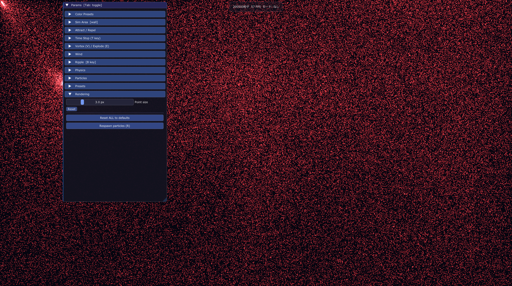
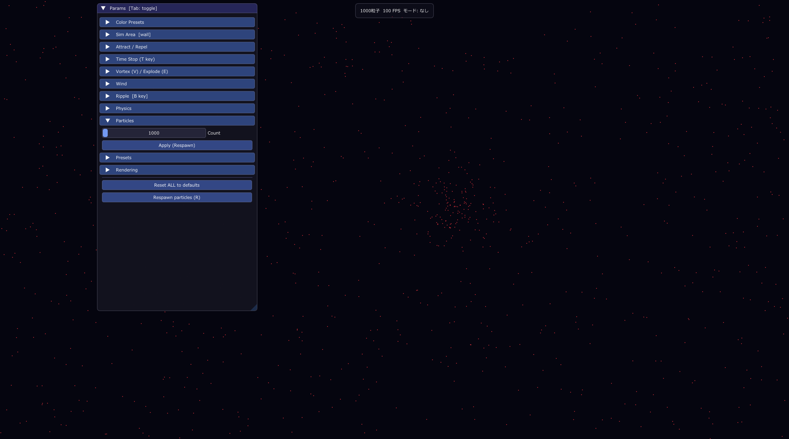
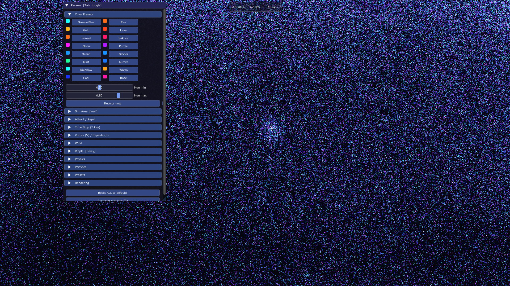

About
マウスとキーボードで
粒子をリアルタイムに操作
最大30万個の粒子が生み出す視覚的な変化を楽しめるインタラクティブビジュアル作品です。
予測しきれない
動きと模様
渦・波紋・引力などを組み合わせることで、予測しきれない動きや模様が生まれます。パラメータを調整することで、変化の強さや印象も大きく変わり、自分だけのデジタルアートを見つける感覚を楽しめます。
粒子を操作する
主な５つの方法
引力
左クリックカーソルに向かって粒子が引き寄せられる操作です。周囲の粒子が吸い込まれるように集まり、流れにまとまりが生まれます。
渦
V キーカーソル周辺に渦のような回転を生み出す操作です。粒子を巻き込みながら流れを変化させ、複雑なうねりを作り出します。
タイムストップ
T キー粒子を急激に減速させる操作です。動いていた粒子が一気に静まり、時間が止まったような印象的な変化を生み出します。
波紋発生
B キー一点から衝撃波のような広がりを生み出す操作です。中心から外側へ向かって粒子が押し広げられ、波のような動きが発生します。
収束
G キー画面上の粒子を一気に集める操作です。散らばっていた粒子がまとまり、密度の高いダイナミックな変化を楽しめます。
※見やすいようにパラメーターを一部設定しています
その他の操作
詳細設定
強弱、範囲、速度などのパラメータを調整できます。
粒子の大きさ
細かすぎるなと感じたときに使ってください。

粒子の数
多すぎて見づらいときに使ってください。

色の変更
好きな色に変えてみてください！

おすすめの遊び方
渦で巻き込み、集める
V ずっと長押し ⇒ G 押 ⇒ G 離
渦を発生させたあとに粒子を集めると、流れが大きく変化します。参考映像を見ながら試してみてください。
一瞬の変化を楽しむ
G を一瞬押して、E を長押し
粒子の動きに大きな変化が生まれます。短い操作でも印象が大きく変わるのが特徴です。
Gを押す長さによって見れるものが変わるかも、、、？ぎりぎりまでGを押して開放してみよう！
線のような表現を作る
G を長押し後にカーソルを動かす
線のような軌跡が現れます。その線に対して左クリックすると、また違った変化を楽しめます。
パラメータを変えてみる
speed limit を 200px/s に変更
params を開き、Physics → speed limit を 200px/s に変更して１，２，３をもう一度試してみてください。同じ操作でも、まったく違う光景が見えてくると思います。
自分だけの動きや
表現を見つけてみてください
パラメータを1つ変えたり、ボタンの押す長さやタイミングで見える景色は大きく変わります。